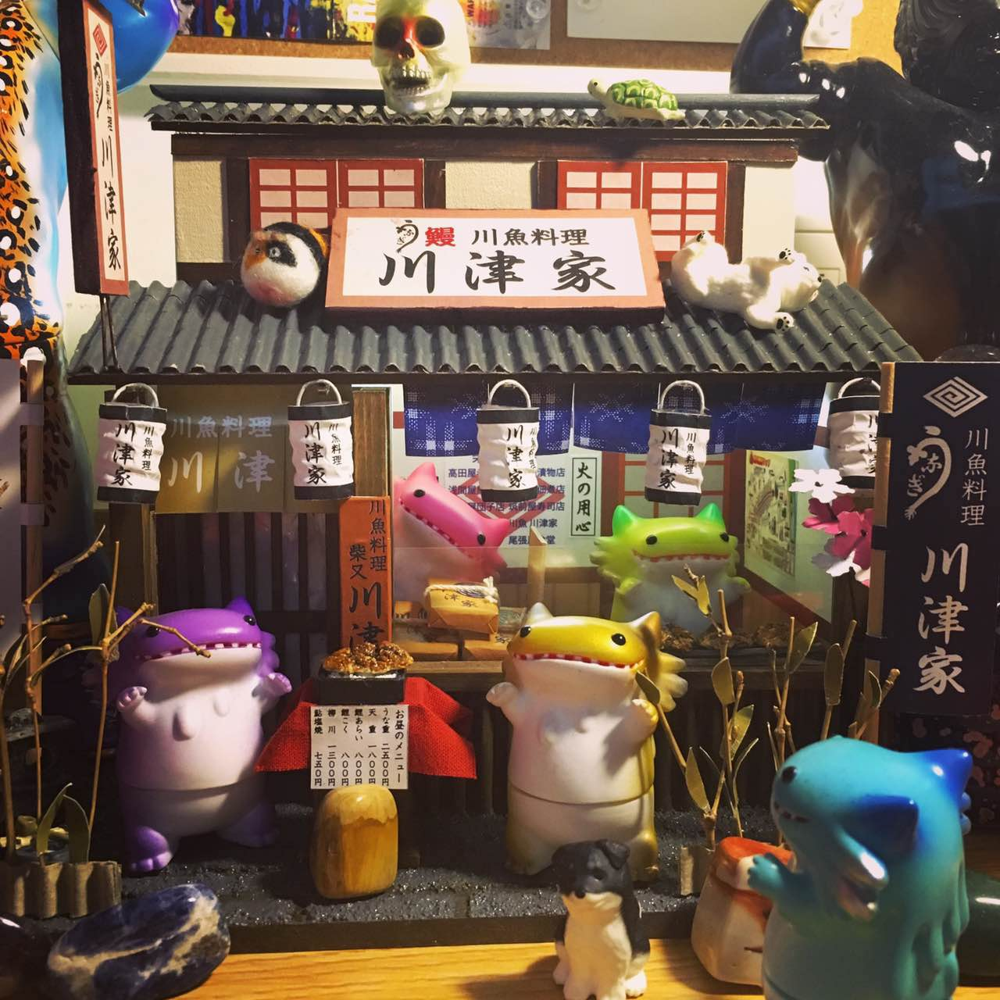
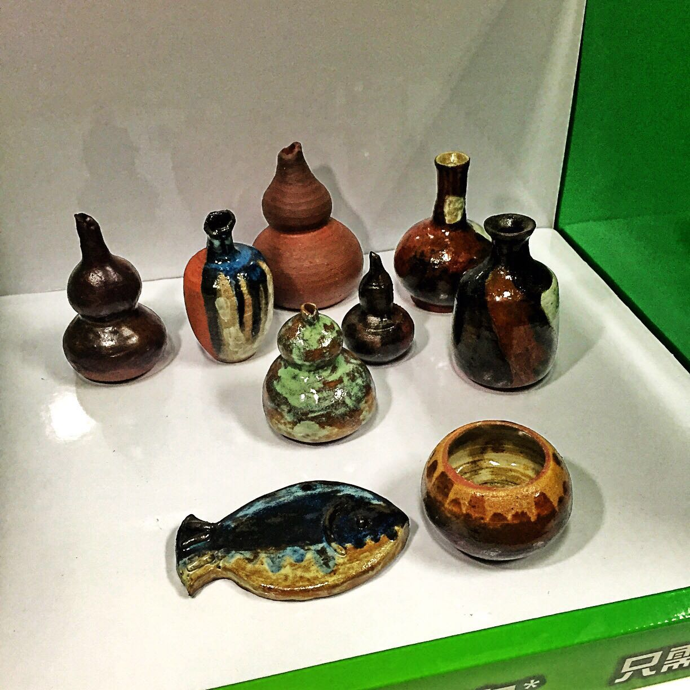
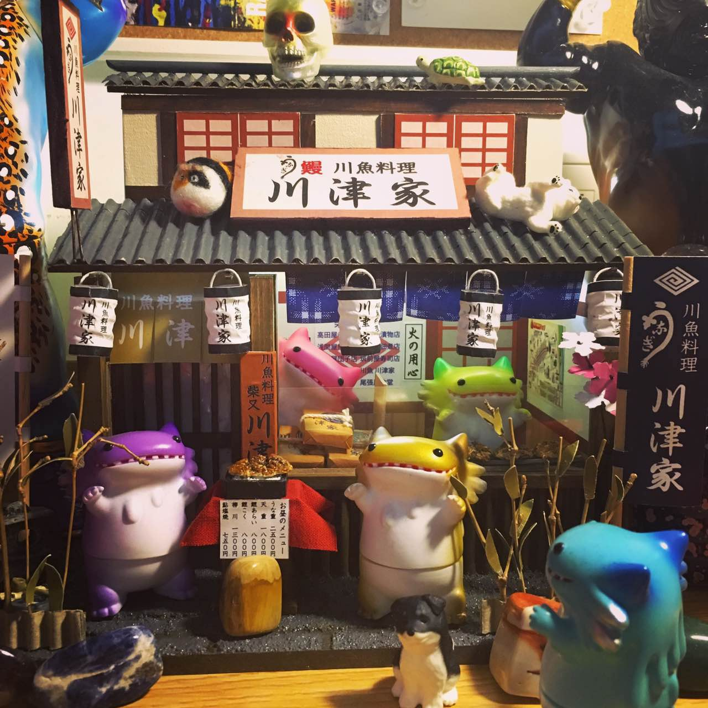
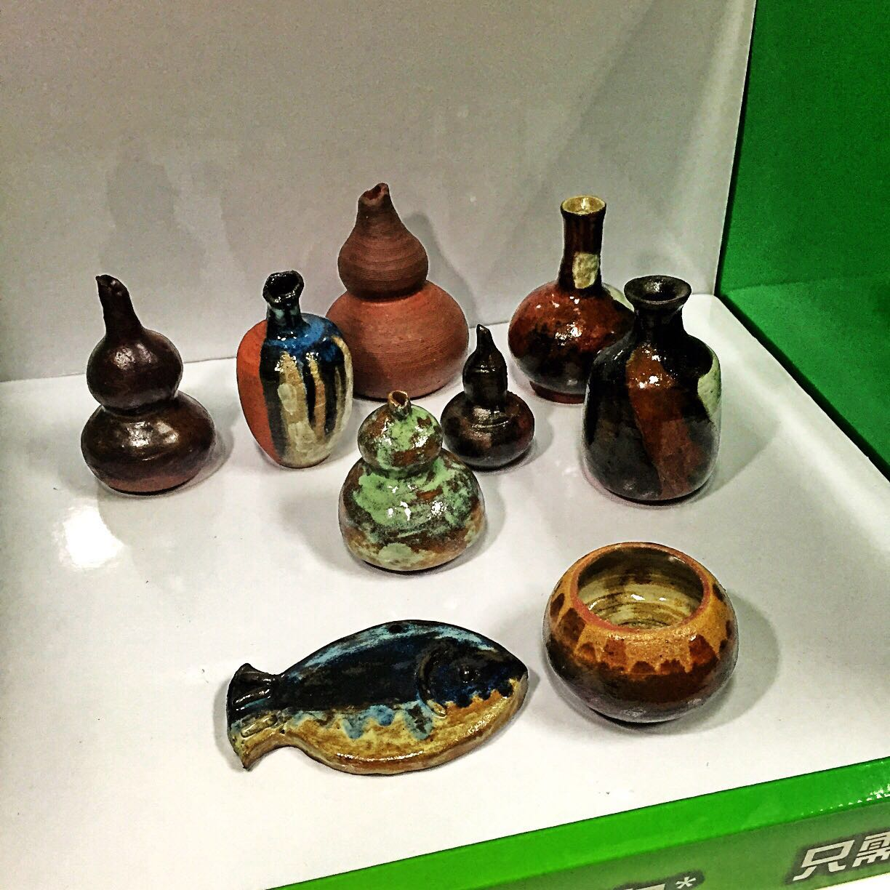

This is a wooden furniture model,
which is made by wood, paper, glue,
paint.You can use it to design your
own house before you formally decorate
a house. In addition, it's visual for
you to see the overall effect of the
building.
more detailsThis is a plastic greenhouse model,
which is made by plastic, paper, glue,
paint. It is more detailed and beautiful
than the wooden furniture model, but the
flexibility is lower than the wooden
furniture model. You can buy many little
planes and tools model to decorate it.
more detailsThis is a Cartons of wine house model,
which is made by cardboard, paper, glue,
paint. This model's practicability is
low, like a decorations. The moled has
high plasticity so you can make buildings
which you like. The model can make your
dream of childhood come true.
It's usefulness and artistry china wins
world's praise and respect. In our studio,
each piece of our chinaware are pure
handcrafted. Using good quality porcelain
clay and glazed with a food safe glaze
so you can gain pleasure from both form
and function from our product. Our design
may not be as perfect as machine makings,
but we are sure they are unique and artistic!
more details 


